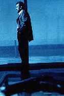

Contents | Features | Reviews | News | Archives | Store |
 |
|
| Movie Credits | Buy It! |
Heat
Review by Carrie Gorringe
 |
|
Directed and Written by Michael Mann. Starring Al Pacino, |
Boiled down to its essentials, Heat is the tale of Vincent the detective (Pacino) and Neil the bank robber (De Niro), who discover that they have a lot in common, so much so, in fact, that, after a face-to-face meeting in a coffee shop, each determines that the other, under normal circumstances, could be a close friend. But these are not normal circumstances, or maybe they are within the confines of a Michael Mann film. To wit: in the opening scenes, Neil and his gang have just knocked over an armored car, stealing bearer bonds from a trader with ties to an unnamed group of South American drug dealers. In addition, a rogue member of the group made the arbitrary decision to act as judge, jury and executioner on behalf of the three guards stationed within the car, thereby adding first-degree murder to armed robbery charges. As if this weren’t enough, Neil is trying to put together one more score -- this time a bank with twelve million on hand -- so that he can retire to New Zealand with his new love, Edie (Brenneman), while simultaneously keeping Vincent at bay and getting even with the trader who has been trying to kill him. Compounding all of this are weaknesses within Neil’s crew: Vincent has them all under more or less constant surveillance, while Neil’s right-hand man, Chris (Kilmer) is having troubles with his wife, Charlene (Judd); uxorious to a fault, Chris has to account for every penny from each heist from a wife who is both greedy and resentful of his gambling habits. Meanwhile, things are not looking any rosier on Lt. Vincent Hanna’s home ground: thrice-married, he is not having too much luck with his current wife Justine (Verona) who is an unsatisfied depressive with a suicidal daughter from a previous marriage. Is everyone still with me so far?
Uncomplicated the plot is not, and Mann (and the audience) have to juggle these sometimes disparate narrative fragments for the better part of a running time of nearly three hours. The length may sound off-putting, but the effect on-screen is not. Amazingly, Mann succeeds in making this seemingly unwieldy contraption get up and spin smoothly, with very few interruptions in movement. It helps that Mann knows the pedigree of the crime film genre and mines it to great effect: the script borrows elements from such great films as Criss Cross (1948), High Sierra (1941) and Rififi (1955), among them the fatal love connection (from Criss Cross and High Sierra) and the big score that goes horribly wrong (from Rififi and Criss Cross). What separates Mann from other filmmakers who indulge in these extra-textual borrowings is that Mann has an instinct for knowing exactly when the borrowing has to stop so that his own creativity can take over. Mann gives the audiences nuances of what came before rather than entire scenes replicated whole cloth, with scant reinterpretation save for updating the time and place; he has reverence for the past, rather than seeing it, as certain unnamed filmmakers do, as a source from which they can shamelessly plunder, relying upon either the inside knowledge of film buffs or a perceived ignorance of contemporary audiences in order to operate with impunity. Brilliantly-executed rapid-fire editing makes Heat move like an exquisitely engineered machine, but Mann uses his extra screen time for constructing expositions about the characters, and this personal information is absolutely fascinating and hardly perfunctory. Rather, Mann makes each nugget of information absolutely essential to the narrative. He manages to be economical with excess, and that’s a difficult thing to do.
It helps that Mann’s cast is one that many directors would kill for. Pacino and De Niro literally command attention when they are on the screen, although they do so in entirely different ways. De Niro’s Neil alternates effectively between a life of crime carefully orchestrated to the nth degree and a feeling of ennui which seems to have no boundaries; he seems not to know what he is looking for, until he finds Edie. As the ennui breaches the previously unassailable dike between his private and personal lives, Neil breaks the cardinal rule by which he has lived most of his life: "Have nothing in your life that you cannot walk out on in thirty seconds flat if you see the heat coming round the corner." Neil’s love for Edie is one that will kill him, and it is De Niro’s gift to invest Neil’s personal demeanor with an eerie ambiguity that suggests that Neil really doesn’t care if he lives or dies now that he has loved. For his part, Pacino goes to the opposite end of the spectrum, opting for bombast, and sometimes it works. Mostly, however, Pacino’s take on Vincent is almost embarrassingly reminiscent of his role in Scent of a Woman. But even Pacino is saved from himself. De Niro and Pacino have only two scenes together in the entire film, and only one allows them to actually interact. It does not occur until halfway through the film, but it is worth the wait. Their subtle sparring in a coffee shop has all the hallmarks of an elegantly-staged pissing contest. Both contestants project a wry demeanor about their shared fate, but each is also deadly serious about his goal and determined to best the other, even if one of them must die. The meeting is short (less than fifteen minutes), but the scene establishes beyond any doubts why De Niro and Pacino, under the right circumstances, are the best screen actors of their generation and of all time.
The rest of the cast rounds out De Niro’s excellent performance and Pacino’s sometimes-excellent performance nicely. Kilmer guides his character deftly within the confines of a love that threatens at any time to fall into real self-abnegation. Yet, Kilmer’s Chris has a patina of dignity surrounding him; no matter how angry Charlene makes him, Chris knows that there is no one else, so he must do whatever it takes to make her happy, regardless of the cost. Chris has no illusions, but he is strained; his every act of crime could potentially separate himself from what he needs most. At times the restrained but unmistakable sense of irony in Kilmer’s performance nearly cause him to walk away with the picture.
Unfortunately, the women in the cast don’t fare as well in this testosterone-driven genre film -- like most action directors, Mann has never been traditionally adept at crafting roles for his female actors, but they do reasonably well with what they’re given. Edie wants so badly to believe in Neil at any cost, and Brenneman gives her just the right combination of vulnerability and strength. Judd, in her much-touted debut, doesn’t live up to the hype, (she spends much of her on-screen time in a state of terminal petulance) but she has enough presence to show promise, especially when Charlene is forced, under the threat of losing her child, to betray her husband. For just one moment, and a beautifully-rendered one at that, Judd lets the audience see Charlene’s complex vulnerabilities and fears. Unfortunately for Venora, her character is the least sympathetic of the three; the third Mrs. Hanna is nothing more than a self-absorbed whiny wife who can’t understand why Vincent has to deal with the "detritus" of society The word "detritus", uttered rather incongruously at a cocktail party, is Mann’s cue to the audience that Justine is an effete "artiste" who is simply unsuited to be the wife of such a vital like Vincent. As the film progresses, Mann constructs the relationship between Vincent and Justine as a series of binary oppositions, all of which are designed to make the work-obsessed Vincent Hanna into Saint Vincent the Domestic Martyr. He doesn’t use Prozac (although he seems to need it badly); she does. He cares about his stepdaughter; she seems indifferent to her daughter’s fate. Incontrovertible proof of her unworthiness comes when Vincent breaks the news of her daughter’s suicide attempt to her, and Justine cries out, "How could she do this to us?" True, Justine’s relationship with Vincent has lots of heat, but it’s of the self-immolating variety. It’s a really ugly role, and Verona, understandably enough, doesn’t seem comfortable enough with it to play it for what little it’s worth, so regrettably she becomes the weak link in this film through no fault of her own.
It has its weaknesses ("detritus" isn’t the only example of laughably tendencious language in this film) but Heat generates enough of its own to keep you entertained. Certainly the stunning cinematography by Dante Spinotti (he was also responsible for the super-saturated. literally scintillating, images in Mann’s Manhunter in 1986) should be enough to keep your eyes glued to the screen. Disregard Neil’s advice, and don’t run when you see Heat coming round the corner.
Contents | Features | Reviews | News | Archives | Store
Copyright © 1999 by Nitrate Productions, Inc. All Rights Reserved.